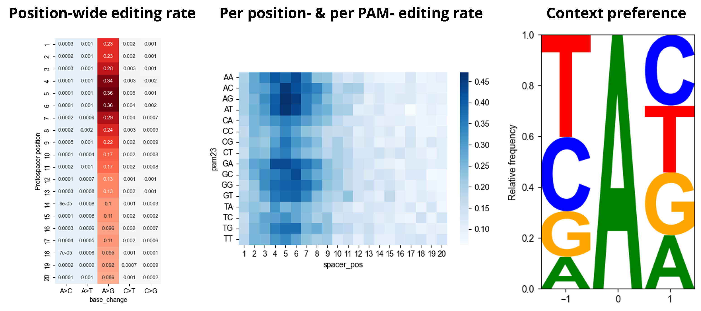

bean profile¶
bean profile: Profile editing patterns¶
bean profile my_sorting_screen.h5ad -o output_prefix `# Prefix for editing profile report`
Output¶
Above command produces prefix_editing_preference.[html,ipynb] as editing preferences (see example).

Full parameters¶
usage: bean profile [-h] [-o OUTPUT_PREFIX] [--replicate-col REPLICATE_COL]
[--condition-col CONDITION_COL] [--pam-col PAM_COL]
[--control-condition CONTROL_CONDITION] [-w WINDOW_LENGTH]
bdata_path
Positional Arguments¶
- bdata_path
Path to the ReporterScreen object to run QC on
Named Arguments¶
- -o, --output-prefix
Output prefix of editing pattern report (prefix.html, prefix.ipynb). If not provided, base name of bdata_path is used.
- --replicate-col
Column name in bdata.samples that describes replicate ID.
Default: “replicate”
- --condition-col
Column name in bdata.samples that describes experimental condition. (sorting bin, time, etc.)
Default: “bin”
- --pam-col
Column name describing PAM of each gRNA in bdata.guides.
- --control-condition
Control condition where editing preference would be profiled at. Pre-filters data where bdata.samples[condition_col] == control_condition.
Default: “bulk”
- -w, --window-length
Window length of editing window of maximal editing efficiency to be identified. This window is used to quantify context specificity within the window.
Default: 6